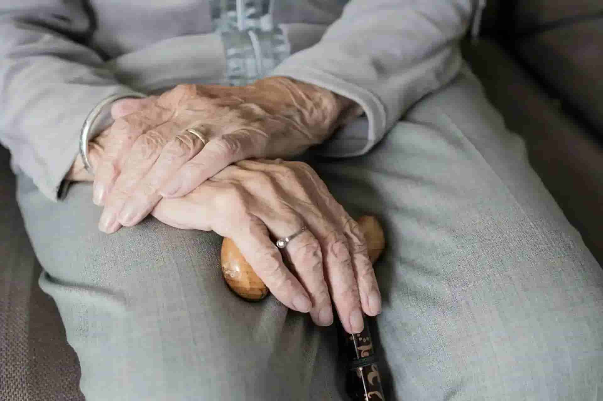
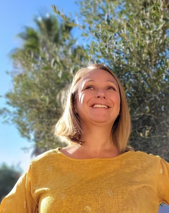

Pédiatrie & Nourrissons
Je traite les coliques, reflux, troubles du sommeil, les torticolis, les plagiocéphalies et réalise des bilans post-naissance pour accompagner une croissance harmonieuse dès les premiers jours.

La clarté du soin, l'équilibre du corps
Je suis Angélique Héduin, ostéopathe D.O. diplômée et installée à Bessan, dans l'Hérault. Je vous accueille dans mon cabinet pour soulager vos douleurs et restaurer votre mobilité grâce à une approche ostéopathique et fasciathérapeutique globale et personnalisée. Que vous soyez nourrisson, femme enceinte, sportif, adulte ou senior, j'adapte chaque séance à vos besoins spécifiques. J'interviens également à domicile dans un rayon de 15 km autour de Bessan, sur des communes comme Agde, Florensac, Pézenas, Saint-Thibéry et Marseillan.

24+
Ans d'expérience100%
BienveillanceJe prends en charge chaque patient de manière globale, à chaque étape de la vie
Je traite les coliques, reflux, troubles du sommeil, les torticolis, les plagiocéphalies et réalise des bilans post-naissance pour accompagner une croissance harmonieuse dès les premiers jours.
J'accompagne les femmes enceintes pour soulager les douleurs lombaires et préparer le bassin à l'accouchement. Je suis également disponible après la naissance pour la récupération post-partum.
J'aide à optimiser les performances, favoriser la récupération après l'effort et traiter les blessures courantes comme les entorses ou tendinites.
Je travaille sur le maintien de la souplesse articulaire et le soulagement des douleurs chroniques liées à l'arthrose et au vieillissement.
Je prends en charge les migraines, le stress, les troubles digestifs et les affections ORL chroniques grâce à une approche ostéopathique complète.
J'interviens rapidement pour les blocages aigus : lumbago, torticolis, sciatalgie. Une prise en charge rapide pour vous soulager au plus vite.
Mon cabinet est situé au 17 Chemin du Maïroual à Bessan (34550), dans un espace calme et facilement accessible. L'accès est aménagé pour les personnes à mobilité réduite (PMR) et le stationnement est simple et se fait dans la cour pour les véhicules légers
Chaque consultation commence par un échange approfondi sur vos antécédents et votre motif de consultation. Je réalise ensuite un bilan palpatoire avant d'appliquer un traitement ostéopathique manuel entièrement adapté à votre situation.
Je me déplace également à votre domicile dans un rayon de 15 km autour de Bessan pour les personnes qui ne peuvent pas se déplacer. Une majoration tarifaire s'applique pour ces consultations.
Une professionnelle à la fois douce, à l'écoute et extrêmement bienveillante. Elle prend le temps d'expliquer chaque geste et on se sent tout de suite en confiance.
Je lui ai confié mon bébé, mon mari, mes parents et nous sommes tous convaincus par son grand professionnalisme. Une perle !
Très à l'écoute, extrêmement efficace, qui connaît parfaitement son métier et surtout très humaine. Je vous conseille vivement.